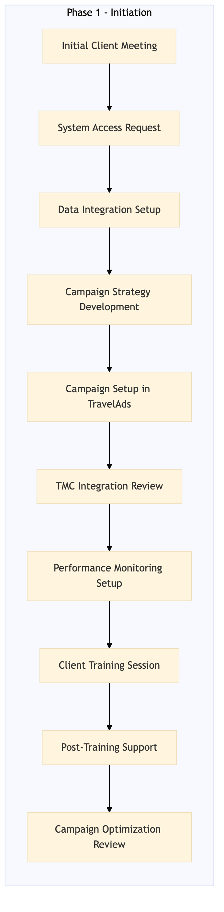

This process document outlines the steps for onboarding a new client and setting up marketing campaigns within the OTA Marketing Media and Loyalty domain.
| Trigger | Receiving a request from a potential client to onboard and set up media solutions and B2B marketing campaigns. |
| Outcome | Successful onboarding of the client with all necessary systems configured, campaigns set up, and initial data flow established. |
| Systems | Expedia Open World Partner Central Amadeus NDC Sabre GDS Travelport EVC One Key TravelAds AWS SageMaker Snowflake Kafka Salesforce Tableau SAP Concur T2 SAP Concur Expense Amex GBT Neo/Complete SAP S/4HANA International SOS Cvent Amex Corporate Card VCN SAP Analytics Cloud Workday |

Click to enlarge
| Step | Name & Pain Point | Role | System | Input | Output | KPI | Flags |
|---|---|---|---|---|---|---|---|
| 1.1 | Initial Client Meeting Understanding client's specific needs | Client Success Manager (CSM) | Salesforce | Client contact information | Meeting notes and client requirements document | Client satisfaction score > 80% | ⚠ Exception |
| 1.2 | System Access Request System integration issues | IT Support | Expedia Open World, Partner Central, Amadeus NDC, Sabre GDS, Travelport, EVC, One Key, TravelAds, AWS SageMaker, Snowflake, Kafka, Salesforce, Tableau | Client information and requirements | System access credentials | Access granted within 2 business days | ⚠ Exception |
| 1.3 | Data Integration Setup Data mapping and transformation | Data Engineer | AWS SageMaker, Snowflake, Kafka | Client data and system access credentials | Integrated data pipelines | Data flow established within 1 week | ⚠ Exception |
| 1.4 | Campaign Strategy Development Aligning with client's marketing goals | Marketing Analyst | Tableau, Salesforce | Client requirements and data insights | Campaign strategy document | Campaign strategy approved by client within 2 weeks | ◆ Decision |
| 1.5 | Campaign Setup in TravelAds Technical issues with campaign launch | Marketing Specialist | TravelAds | Campaign strategy document | Active campaigns in TravelAds | Campaigns live within 3 business days | ⚠ Exception |
| 1.6 | TMC Integration Review Complexity of TMC systems | IT Support | SAP Concur T2, SAP Concur Expense, Amex GBT Neo/Complete, Amadeus GDS, SAP S/4HANA, International SOS, Cvent, Amex Corporate Card, VCN, SAP Analytics Cloud, Workday | Client requirements and system access credentials | Integration status report | TMC integration completed within 1 month | ⚠ Exception |
| 1.7 | Performance Monitoring Setup Real-time data visualization | Data Analyst | Tableau, Snowflake | Campaign strategy and data pipelines | Performance monitoring dashboards | Dashboards ready within 2 weeks | ⚠ Exception |
| 1.8 | Client Training Session Client engagement | Client Success Manager (CSM) | Salesforce, TravelAds, Tableau | Client access credentials and dashboards | Training session notes and client feedback | Client training completion rate > 90% | ⚠ Exception |
| 1.9 | Post-Training Support Ongoing client support | Support Team | Salesforce, TravelAds, Tableau | Client feedback and issues | Resolved support tickets | Support ticket resolution rate > 95% | ⚠ Exception |
| 1.10 | Campaign Optimization Review Data-driven decision making | Marketing Analyst | Tableau, Snowflake | Performance data and feedback | Optimization recommendations | Optimization recommendations provided within 4 weeks | ◆ Decision |